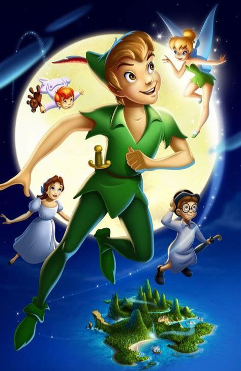

Peter Pan
Peter Pan vive junto com sua fadinha chamada Sininho lá na Terra do Nunca. Uma vez, Peter saiu da Terra do Nunca para voar por aí e começou a escutar uma voz doce, a voz de uma menina que, contava uma história. Ele curioso, foi até a janela dessa menina e se apaixonou a primeira vista!
A menina linda se chamava Wendy, tinha cabelos castanho claro e olhos azuis. Ela tinha dois irmãos: João e Miguel. Peter se apresentou a eles e os convidou para dar uma volta. Os irmãos de Wendy não queriam ir, mas a irmã estava tão fascinada com aquilo tudo que foram para acompanhá-la. E eles foram voando de mãos dadas com Peter Pan e encantados com aquilo tudo que estava acontecendo e não acreditando que eles estavam voando. Já para Peter, isso era a coisa mais normal do mundo.
Wendy e seus irmãos conheceram a aldeia dos índios, avistaram o barco
pirata e viram os meninos perdidos. Tudo isso de lá de cima. De repente,
Capitão Gancho avista Peter Pan e seus novos amigos e manda canhões em
direção a eles. Wendy neste momento quase foi atingida e se desequilibra
e ameaça cair. Porém, Peter a segura, fazendo com que os dois se
apaixonem cada vez mais.
Peter, Wendy e seus irmãos conseguem fugir e vão se esconder na casa dos
meninos perdidos. Eles moravam dentro de uma árvore oca e usavam roupas
todas rasgadas. Se encantaram com Wendy e seu cheiro. Wendy vendo que
eles nunca tinha tido contato com uma menina, começou a contar lindas
histórias para eles.
Um belo dia, Capitão Gancho raptou a Princesa dos Índios. Todos se
mobilizaram e Peter Pan a salvou do Capitão Gancho. O tempo passou e não
satisfeito, o Capitão armou o plano de raptar desta vez os meninos
perdidos e conseguiu! Os raptou e os levou para seu navio. Lá, ele os
jogaria no mar para serem engolidos pelo crocodilo Tic Tac. Mas quando o
pior iria acontecer, Peter Pan aparece e salva seus amigos. Ele luta
valentemente contra o Capitão Gancho e vence a batalha.
Wendy
então pede para voltar com seus irmãos para sua casa, pois seus pais
deveriam estar preocupados. Peter Pan então os leva. Ao chegar na casa
de Wendy, seus irmãos entram e ela fica para dar o último adeus a Peter
Pan. Eles conversam e ela pergunta se ele não quer ficar ali com eles.
Ele diz que não, pois a Terra do Nunca é a sua casa e lá ele não
cresceria e poderia viver para sempre como criança. Ele se despede de
Wendy e voa. Ela o observa pela janela, o contemplando e pede bem
baixinho que ele nunca deixe de olhar por ela.